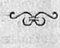
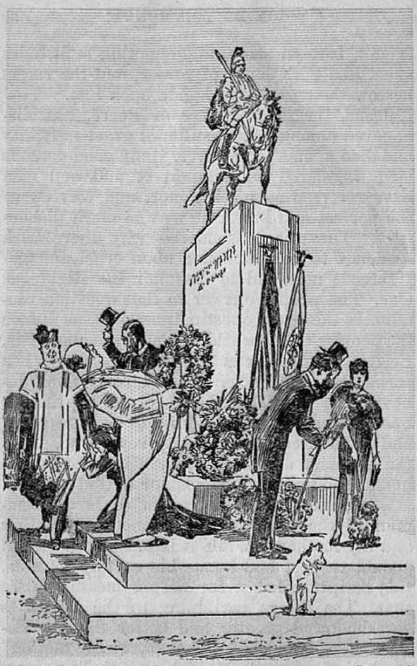

47 Armageddon
55 Liberty

explained in Seven Bible Treatises by
J. F. RUTHERFORD
Page
3 Civilization Doomed
11 Prisoners
20 Whose Prayers Are Answered?
28 A Model Prayer
37 Whom Do Yon Honor?
47 Armageddon
55 Liberty
•>------------------------------------------------------------------------<•
Dear Judge Rutherford:
"Your books arc the most amazing cyc-opcncrs I ever read. Until I checked the scriptures you cite, I couldn’t believe that the Bible contained such a reasonable and complete statement of God’s purpose to give life, liberty and happiness to the people right here on earth.”
CorvitioHTED 1932 and Published by W A I CH TOWER BIBLE AND TRACT SOCIETY International Bible Students Association Brooklyn, N. Y., U.S.A.
Branch Offices: London, Magdeburg, Paris, Toronto, Strathfield, Cape Town, Berne, Copenhagen, Stockholm, and other cities.
Made in U. S. A.
THE peoples of earth, formed into nations and organized into governments, constitute present civilization. The most prominent amongst these are the nations which collectively are called "Christendom”. These nations are ruled by a combination of commercial giants, professional politicians and religious leaders called clergymen. They claim to rule by divine right and authority. Their claim is false. God never puts his finger of approval upon such a combination. In these nations the wealth and the power, the. education and the politics, the religion and even the health and food of the people, are all controlled by the combined rulers. The strong arm of the law and military power enforces the decrees of these, rulers. The common people must bear their burdens and remain quiet.
The haughty and austere indulge in much boasting concerning the high attainments of present civilization. Many have unwisely convinced themselves that their position is as invulnerable as the rock of ages. In the power of their money they trust, and their selfishness has caused their ears to be closed to the cries 3
of the poor and the oppressed. God has promised that ho will hoar these cries, however; and he hears them.
The religious leaders of "Christendom”, so called, rest (heir faith in the "higher education” and regard the Bible as of little or no value. It is generally known that in the theological colleges and schools today the Bible is tabooed and the sound doctrine thereof is completely ignored or repudiated. Instead thereof reliance is placed upon the sayings of modern "wise” men who occupy positions of leadership and are of the chief ones in modern civilization. The educational institutions of the world have installed teachers and professors whose ears tingle to hear their own praises sung and who know not God. 1 cite these facts, not for the purpose of ridicule, but because they are facts which God long ago foretold through his Word and which are another evidence of the times in which we are living. In 2 Timothy 4: 3,4 it is written : "For the time will come when they will not endure sound doctrine; but after their own lusts shall they heap to themselves teachers, having itching ears; and they shall turn away their ears from the truth, and shall be turned unto fables.” A clear fulfilment of this divine prophecy we see in the. youth’s being taught the theory of evolution of man, which is in direct contradiction to the Word of God.
The ultrarich continue .to increase in power, while the sufferings of the common people increase in like proportions. Never before in the history of man has there been so much tangible and available material wealth in the earth as now, and never before has there been such a great depression and such suffering amongst those who desire the opportunity to earn an honest living. Almost all the farm lands are mortgaged to men who produce nothing, and the burdens of interest and taxation are almost unbearable. Much of the soil is tilled by mere serfs. The fruits of the ground are marketed at little or no profit to the toilers. The cries of these laborers are unheeded by the chief ones in present civilization, while millions are wrung from the people in taxes and expended in an unfruitful effort to enforce unreasonable laws. Long ago God foretold that just such a condition would exist in this day, and he caused a prophecy thereof to be written, in James 5:1-4, in these words: “Go to now, ye rich men, weep and howl for your miseries that shall come upon you. Your riches arc corrupted, and your garments are moth eaten. Your gold and silver is cankered; and the rust of them shall be a witness against you, and shall eat your flesh as it were lire. Ye have heaped treasure together for the last days. Behold, the hire of the labourers who have reaped down your fields, which is of you kept back by fraud, crieth: and the cries of
j£
them which have reaped are entered into the ears of the Lord of [War].”
The most astute statesmen of the world see that some great calamity is about to befall civilization, but have no remedy therefor. One of these recently, at a world congress, said: “Force is the only thing that rules the world. Unless you stamp out that conviction, civilization is doomed upon this earth.” It is feared by the rulers that Bolshevism or Communism will wreck civilization ; but in that they err. The ruling powers are too strong and firmly entrenched to over bo overthrown by Communism, Bolshevism or any like movements amongst mon. If the rulers and the people would give heed to the Bible, they would readily see what will destroy the present world organization. The purpose of this speech and of the books that are brought to your door explaining the Bible is to give you a plain explanation that will enable you to got a proper understanding of the impending crisis.
The day of God’s vengeance is at hand. The time has arrived for him to give expression to his righteous indignation against the powers of wickedness, that his name might be vindicated and that the people might be released from their thraldom. For this reason says the Lord’s witness : ‘The cries of the oppressed have entered into the ears of the God of Battle? Jehovah God will bring relief, and no power can withstand him.
From the prophecy of Isaiah 34:1-8 1 quote the words of Jehovah, to wit: 'Come near, ye nations, to hear; and hearken, ye people. Let all the world hear; for the indignation of Jehovah is upon all nations, for it is the day of his vindication?
But why will the great Jehovah God manifest his displeasure and express his indignation against the people of the earth? The answer is that the Devil’s rule, of the affairs of the world has come to an end; Christ Jesus, earth’s rightful King, is come, and now the rule of oppression and wickedness must fall and make way for the righteous rule of the great Prince of Peace. The Bible declares that the Devil has long been the god of this world; that he has deceived and blinded the rulers and the people, and turned them against Jehovah God; and that for the good of human creation, and for the honor of God's name, the Devil’s power and organization shall be for ever destroyed.
The clergy and their allies claim that they will reform the world, clear out the practice of crime, and make the earth a fit place in which to live. Be no longer deceived by such false claims. They are blind leaders of the blind and shall all fall into the ditch. Let the people give heed to what the great God of the universe says. From Zephaniah 3:81 quote his words, to wit: "Therefore wait ye upon me, saith the Lord, until the day that I rise up to the prey; for my
1.
determination is to gather the nations, that I may assemble the kingdoms, to pour upon them mine indignation, even all my tierce anger: for all the earth shall be devoured with the fire of my jealousy.” The word "earth” in this prophecy means the organized powers of modern civilization which must go down before the onward inarch of Christ, the King of glory.
In Jeremiah 25:31-35 it is written: ‘Confusion shall come to the ends of the earth; for the Lord hath a controversy with the nations; he will give the wicked to the sword. Thus saith the Lord of hosts, Behold, evil shall go from nation to nation, and a great trouble shall be raised up from the sides of the earth, and the slain of the Lord shall be at that day from one end of the earth even to the other, and the shepherds [teachers and leaders of civilization] shall have no way to flee, nor the principal of the flock to escape.’
From time to time there come to your door men and women who exhibit to you books which give an explanation of the Bible. They come not for money, and even the small pittance contributed is used to publish other books to help the people understand. What is the inducing cause, for them thus to come? When Jesus gave answer to the question concerning the end of the world and his second coming, he foretold the present conditions and then gave a positive commandment to those who love him, and which
commandment is found in Matthew 24:14 in these words: “This gospel of the kingdom shall be preached in all the world for a witness unto all nations: and then shall the end come.” In obedience to this commandment, and that the people might be informed of what is immediately about to come to pass, this testimony is brought to your attention.
It is imperative that this testimony be given; and when it is done the collapse of civilization shall come, as Jesus foretold, in these words: “For then shall be great tribulation, such as was not since the beginning of the world to this time, no, nor ever shall be. And except those days should be shortened, there should no flesh be saved: but for the elect’s sake those days shall be shortened.” (Matthew 24:21,22) The fact that Jesus says that this will be the worst trouble the world has ever known and that there shall never be another is conclusive proof that such will end all oppression that has been heaped upon the children of men. There shall immediately follow the inauguration of the righteous reign of peace and prosperity under Christ. Concerning him it is written, in Isaiah, chapter nine: ‘The government shall be upon his shoulder, and of the peace thereof there shall be no end?
It must be apparent to all who think seriously that the. present unhappy condition could not continue for a long period of time. The burdens now heaped upon the people are too great to be borne without breaking them. No human organization has any remedy. The order-loving people should hail with delight God’s announced remedy which spells the doom of present oppressive civilization and reveals the new day of blessedness for the groaning millions of the earth. Be wise now, therefore, and inform yourselves of the meaning of the present-day events and what is about to come to pass. This information is given for the good of those who desire better things than are now had. The groat Jehovah is the God of battle and the God of peace and comfort. He will shortly enforce his decree against the oppressor, will establish peace and righteousness, will vindicate his word and name and will give the blessings of life, prosperity and happiness to all w7ho love and obey him.
The only possible remedy for human ills is God’s kingdom under Christ. The men who are in the load in modern civilization have been caught in Satan’s trap. Neither they nor the people in general appreciate the real cause of present distress. The rulers grope about in darkness for some means of relief, but they find none. The conditions will grow worse, and then God will bring to the people what they really desire. By his prophet Jehovah says, in Psalm 107: “They reel to and fro, and stagger like a drunken man, and are at their wit’s end. Then they cry unto the Lord in their trouble, and he bringeth them out of their distresses. . . . Then are they glad because they be quiet: so he bringeth them unto their desired haven.”
Let no one be discouraged now. When we learn the facts, there is every reason to be encouraged. God has promised that with the passing away of the present oppressive civilization the conditions of righteousness, peace, and prosperity, health and life shall come to the people. That is what men really desire. Sane persons should cease fighting amongst themselves and turn their energies to the acquiring of a knowledge of God’s purposes. Jehovah God now speaks to the people, in Psalm seventy-two, saying: “He shall judge the poor of the people, he shall save the children of the needy, and shall break in pieces the oppressor. . . . His name shall endure for ever: his name shall be continued as long as the sun; and men shall be blessed in him: all nations shall call him blessed.”
THE BIBLE, which is Jehovah’s Word, is an inexhaustible treasure store. The more one searches it, the more marvelous its boundless riches appear. The Israelites wore God’s typical people, organized and used to foreshadow better things to come. Among God’s holy prophets of Israel was Isaiah; whom God used to write down some of his purposes. In the forty-second chapter of that prophecy these words are written: '‘Behold my servant, whom 1 uphold, mine elect, in whom my soul delight-eth; I have put my spirit upon him; he shall bring forth judgment to the [nations]. ... I the Lord have called thee in righteousness, and will hold thine hand, and will keep thee, and give thee for a covenant of the people, for a light of the [nations]; to open the blind eyes, to bring out the prisoners from the prison, and them that sit in darkness out of the prison house.”
This prophecy could not have an application to the nation of Israel, because that nation had no prison houses. A different method was employed to punish their wrongdoers. The key to the understanding of this prophecy is found in 1 Corinthians 10:11, which says these things pertaining to Israel were for examples and were written for the learning of those upon whom the end of the world has come. Other scriptures show that we are now at the end of the world, and hence it is the due time to understand these prophecies. At the time of the fulfilment of the prophecy there are "blind” persons whose eyes must be opened and “prisoners” who must be brought out of the prison houses. The prophecy is addressed to the servant of God and cannot have reference to jail deliveries, because to engage in that would be unlawful and wrong. It is Christ and his faithful followers that perform the work in fulfilment of this prophecy, and its fulfilment is upon those who are mentally blind to the truth and who arc held prisoners by being restrained from obtaining the truth.
A man may be held a prisoner behind iron bars, or he may be held in restraint by fear and for that reason be unable to exercise his liberty. The Lord says: “The fear of man bringeth a snare.” One in a snare is restrained of liberty, hence a prisoner. The physical facts well known supply the proof as to the correct understanding of this prophecy. The prison houses named by the prophet consist of organized religions, amongst which is so-called “organized Christianity”. The prisoners are those who by reason of coercion and fear are restrained from reaching out and getting the truth of God’s purposes. What I now state is not for ridicule, but that you may have in mind the facts as have actually existed, and it will enable you to see the fulfilment of this prophecy.
There are numerous churches or congregations throughout the land, and their worship is mere formalism, bowing down to images and repeating certain rituals. Those who attend and thus do show a form of godliness but have a complete lack of devotion to God. Jesus said that formalism is an abomination in the sight of God. The commandment of Jehovah is: ‘Ye shall make no idols nor graven images, neither rear ye up standing images to bow down to them.’ The formalisms practiced throughout “organized Christianity”, so called, come clearly within the Scriptural definition forbidding graven images. These organizations are the prison houses.
“Organized Christianity” forms a part of this world, because it indulges in ruling the affairs of the world. Satan is the god of this world. The chief prison keeper of these prison houses is Satan, who blinds the people to the truth, and thus the prophet mentions them as “blind”. Each congregation has its shepherd or leader or watchman called “the pastor”. By indulging in the politics of the world and endorsing the League of Nations these clergymen show they are not devoted to God and his kingdom. They refuse to hear the testimony of God’s Word concerning the overthrow of Satan’s organization and the establishment of the righteous rule of Christ on earth. They use their power and influence to coerce, put in fear, and thus prevent members of their congregations from learning the truth as set forth in the Bible. Members of these congregations are thus held in restraint and are prisoners.
Doubtless in every congregation of “organized Christianity” there are many who desire righteousness and who want to see the kingdom of God established. These observe that their speakers before the congregation devote their sermons to worldly politics and scientific and social matters, and never give, the congregation any spiritual food from the Bible. If some member of the congregation suggests that they go elsewhere to hear a lecture on the Bible, the prison keeper informs them that they cannot do so and that unless they remain in the church and support it, they will wreck the world and fix their own destiny in eternal torment. A great multitude are thereby put in fear of men, are in a snare and are hence held prisoners.
There are millions of hungry souls in these church organizations who are in distress of mind because of existing conditions therein. They want to do right and serve God, and they are at a loss to know just what to do. Jehovah foreknew and caused his prophet to write concerning these conditions, in Psalm 79, representing the prisoners praying, to wit: "Help us, 0 God of our salvation, for the glory of thy name; and deliver us.” These prisoners know that the name of God is not honored in their congregations and that outsiders look upon them with scorn and upon their leaders as hypocrites. God’s prophet represents them ns continuing in their supplication in these words: "Wherefore should [those outside] say, Where is their God? let him be known among the [nations] in our sight, by the revenging of the blood of thy servants which is shed. Let the sighing of the prisoner come before thee; according to the greatness of thy power preserve thon those that arc appointed to die.”
This prophecy shows that the prisoners are alive and are appointed to die. All who have made a covenant to do God’s will and have been received as God's children must die as human and be raised up as spirit creatures. All such who voluntarily leave worldly organizations and devote themselves to God and his service are free. Those who are deterred from so doing are held as prisoners. This latter class is described, in Revelation, chapter seven, and other scriptures, as “a great multitude” who are in tribulation. Many of this great multitude are today hungry and thirsty for the truth, and they find it not in their own congregations; and they being prevented by coercion and fear from going elsewhere to find it, God’s prophet represents them as saying: "I looked on my right hand, and beheld, but there was no man that would know me; refuge failed me; no man eared for my soul. I cried unto thee, O Lord; I said, Thou art my refuge, and my portion in the land of the living. Attend unto my cry; for I am brought very low: deliver me from my persecutors; for they are stronger than I. Bring my soul out of prison, that I may praise thy name; the righteous shall compass me about; for thou shall deal bountifully with me.”—Psalm 142: 4-7.
Then Jehovah by his prophet foretells the time when he would hear the cries of these prisoners and send them relief. That time is when God builds up Zion, which takes place at the end of the world when Christ comes to his temple for judgment. We are now at that time. Concerning this, God by his prophet, in Psalm 102, says: “When the Lord shall build up Zion, he shall appear in his glory. He will regard the prayer of the destitute, and not despise their prayer. . . . For he hath looked down from the height of his sanctuary; from heaven did the Lord behold the earth; to hear the groaning of the prisoner, to loose those that are appointed to death.”
In fulfilment of this prophecy and, of course, just at the right time, Jehovah has brought into action the radio which permits these hungry ones to sit in their own homes and listen to a plain statement of God’s Word of truth, and this regardless of opposition by the prison keepers. The message goes through prison walls. Also the Lord has provided books which set forth the facts and scriptures showing the fulfilment of prophecy in this day, and this is food for the hungry prisoners. Multitudes of these people of good and honest hearts are hearing and reading these prophecies of God’s Word. Jehovah by his prophet shows that he will soon open the prison doors, release the prisoners, and quench the thirst of those who desire refreshing truths. In the 14Gth Psalm proof is supplied, and the prisoners are heard saying: “Put not your trust in princes, nor in the son of man, in whom there is no help. Happy is he that hath the God of Jacob for his help, whose hope is in the Lord his God. Which executeth judgment for the oppressed: which giveth food to the hungry. The Lord looseth the prisoners; the Lord openeth the eyes of the blind; the Lord raiseth them that are bowed down; the Lord loveth the righteous.”—Psalm 146:3,5,7,8.
What, then, says the Lord concerning the shepherds in the congregations that vigorously endeavor to restrain the members of their flock from getting an understanding of the truth? By his prophet Ezekiel (chapter thirty-four) Jehovah says: “Behold, I am against the shepherds ; and I will . . . cause them to cease from feeding the flock; neither shall the shepherds feed themselves any more.”
Then says Jehovah: “Behold my servant!” thereby meaning Christ and his true and humble followers who seek not the. approval of men but who are wholly devoted to doing the will of God. Jehovah says: ‘I will send these forth to deliver my message of truth and thereby open the eyes of the blind and bring the prisoners out of the prison houses? This is one of the reasons why the message of truth must now be carried to the. people, and that work is now in progress in fulfilment of prophecy. Such is the reason why
faithful men and women go from house to house on Sunday and during spare time of week days to call attention of the people to the Bible and to books making the Bible message clear. This testimony of the truth will enable those who have been blind to gain an understanding of God’s purposes toward them. Jehovah has commanded that this message of the truth shall be carried to the people, and, regardless of all opposition, God will see that his purpose is accomplished.
There are millions of good people in the world who are not members of church congre- ■ gations and who see much hypocrisy in the churches and for that reason hold themselves aloof therefrom. They do not understand the truth, because both God and the Bible have been misrepresented to them. They too must have an opportunity to learn of and concerning God’s purposes. This work of giving the testimony God has committed to Jesus Christ, and all who are true followers of Christ are privileged to have some part therein, Christ is therefore the teacher of all who will hear. Therefore Jehovah says of his elect Servant, in Isaiah 55:4: “Behold, I have given him for a witness to Ilie people, a leader and commander to the people.”
The Idngdom of God is at hand. Entrance to that Idngdom is symbolized by its gates. Addressing those who are devoted to him and who are his witnesses, the Lord, in Isaiah, says:
"Go through, go through the gates; prepare ye the way of the people; east up, cast up the highway; gather out the stones; lift up a standard for the people.” A standard is a guidon to point the people to the right way. God’s commandment is that his witnesses now lift up a standard for the people that they may see the right way to go. When one comes to your door bringing to you an explanation of the Bible, know that this is a message from the Lord to you and for your good. The day of deliverance is at hand. All who will hear the truth and walk in the light thereof shall receive the blessings of liberty and endless joy. Honor Jehovah God, and he will honor you.
THERE arise in every serious mind at times questions to which one attempts to find satisfactory answer. Among these many questions is this one, Whose prayers are heard and answered? Perplexity or distress causes a person to realize the necessity of help. Knowing of no one to whom he might go for help man prays to an unseen power. Is Iris prayer heard? and may he expect relief? Another person feeling the need of help seeks a priest or preacher and tells him of his trouble and asks
WHOSE PRAYERS ARE ANSWERED? 21 for prayer in his behalf. May it be expected that such prayers are heard, and relief granted in answer thereto? The clergyman stands before his congregation or before the microphone or in the public assembly of the national Congress and prays aloud to someone. Is there reason to expect that his prayer is heard and that the relief asked for will be granted? These are questions of importance to humankind.
One of the greatest privileges the Christian enjoys is that of prayer to Jehovah. Offered in harmony with the Word of God, and with confidence in God and in his Word, an answer may be confidently expected. Not every one has the privilege of prayer. One’s privilege may be. different at different times. It is therefore important to have an understanding of the subject matter as outlined in the Word of God, that we may understand who has the privilege pf prayer, and under what circumstances.
Prayer is a petition asking for relief or favor. If intelligently made, it is addressed to one. possessing the power and ability to grant the relief or favor desired. God is all-powerful. He possesses the power and authority to grant relief; therefore a petition addressed to Jehovah, according to his will as expressed in his Word, may receive a favorable consideration.
Many of.the peoples of earth address their prayers to stones or statues made of wood or to other inanimate objects. Some turn wheels and
count that as a prayer; while others count beads while they repeat some words, and believe this is prayer. Such prayers are worse than useless, and are never answered. Many prostrate themselves in an attitude of devotion before an image or some other inanimate object in the form of a cross, believing that the presence of such object will aid them in their prayers. Such prayers are offered without a proper understanding of the Scriptures. The people who offer these prayers are not to be blamed, and what is here said is not said for the purpose of ridicule, but that the attention of seekers for truth may be directed to the privilege of praying to God, the Giver of every good and perfect gift.
Does every person have the privilege of approaching God in prayer with full assurance of obtaining the thing desired? They do not have that privilege. They may pray, but with no expectation of having their prayers answered. Are the prayers of all preachers heard and answered? No, not merely because a man is a preacher or priest. If the prayers of all preachers or priests are not heard and answered, then why should anyone go to them for prayer? To be sure, there is nothing gained by asking a man to pray for you unless that man himself has the privilege of prayer. Upon this point the .scripture says: “For the eyes of the Lord are over the righteous, and his cars are open unto their prayers: but the face of the Lord is against them that do evil.” (1 Peter 3:12) By this authority it is seen that only the righteous have the privilege of prayer with the assurance that relief may be had.
Does not the. sinner have the privilege of prayer unto Jehovah God? As a sinner, no; but God hears the honest cry of the sinner for help and opens the way, if he is obedient thereto. If one is a sinner and turns away from his course, of wrongdoing and earnestly desires to do right, then he is in an attitude of feeling after God. If he then follows the way pointed out to him, he may have the privilege of prayer. Is there any man by nature so right or righteous as to be entitled to pray? The Scriptures answer that all men by inheritance were born in sin and shapen in iniquity. In Romans 5:12 it is written : “Wherefore, as by one man sin entered into the world, and death by sin; and so death passed upon all men, for that all have sinned.”
What is meant by “righteous” or “righteousness”? It means to be right with God or have God’s approval. Is it possible for a man to he right or righteous? Yes, it is possible, and God has made that provision. It was Adam who sinned and was sentenced to death. All of his children were therefore born unrighteous. God made provision through the death and resurrection of the. perfect man Jesus that the sinner may be justified or approved. In Romans 4:5 it is written: ‘To him who believes in Jesus Christ, his faith is counted for righteousness.’ Righteousness and justification mean the same thing. “Therefore being justified by faith, we have peace with God through our Lord Jesus Christ.”
The Bible states that there is no possible way for one to come into harmony with God and be justified or approved, except by faith in the shed blood of Jesus Christ as that which provides the redemption price for man.—Romans 5:18,19; Acts 4:10,12.
If a man wants to be in harmony with God, what shall he do? The Scriptures answer: “Jesus sai th . . . , I am the way, and the truth, and the life: no man cometh unto the Father, but by me.” (John 14: 6) Furthermore, Jesus said: “If any man will come after me, let him deny himself, and take up his cross, and follow me.” (Matthew 3 6: 24) That means that a man must believe in Jesus as his Redeemer, must consecrate himself unto God and take his stand firmly on the Lord’s side regardless of the reproaches that come upon him for so doing. It is not necessary for a preacher or priest to consecrate him, but each man must do it for himself, because consecration is an agreement to do God’s will. Then God justifies or approves that man because of his faith in Christ Jesus.
A person who is in this condition has the privilege of prayer unto Jehovah with the expecta-
WHOSE PRAYERS ARE ANSWERED? 25 tion of being heard and answered when the prayer or petition is made in harmony with Qod’s Word. Can a Mohammedan or a heathen pray to Jehovah God and expect to be heard and answered? No, because he does not know God and believes not on Christ Jesus, and therefore he cannot exercise faith.
Then how about a clergyman who does not believe God and who does not accept Christ’s shed blood as the redemptive price of man? May he pray? and will his prayer to Jehovah be answered? No! His prayer would not be heard or answered, for the reason that God is no respecter of persons and he does not hear those who are not in harmony with him. The mere fact that a man claims to be a preacher or minister of God’s Word and occupies a pulpit and is supported by a congregation is no reason whatsoever that he has the privilege of prayer unto Jehovah.
Does that mean that the clergymen, who pray in public or through the microphone that men may see them or hear them, are not heard and answered by the Lord? That is the correct conclusion according to the Bible, and the Bible is the only authority by which the question can be determined.
Then what advantage is there for a sinner Io go to such a clergyman or priest mid ask his prayer? None whatsoever. Jesus answered that question and made it so dear that there would be no doubt about it. In his time the Jewish clergymen were made up of the scribes, priests and Pharisees. They occupied the exalted position of “Moses’ seat”, and it was their duty to teach the people the truth. They did tell the people about the Scriptures, but they acted contrary thereto themselves. In Matthew, chapter twenty-one, Jesus drew a contrast between the clergymen and the publicans and approved the publicans. In Luke, chapter eighteen, Jesus said:
"Two men went up into the temple to pray; the one a Pharisee, and the other a publican. The Pharisee stood and prayed thus with himself: God, I thank thee that I am not as other men are, extortioners, unjust, adulterers, or even as this publican: I fast twice in the week, I give tithes of all that I possess. And the publican, standing afar off, would not lift up so much as his eyes unto heaven, but smote upon his breast, saying, God be merciful to me a sinner. I tell you, this man went down to his house justified rather than the other; for every one that ex-alteth himself shall be abased; and he that humbleth himself shall be exalted.”
Men stand in public places and pray aloud to be heard of others. They stand before the microphones and broadcast words that are supposed to be a prayer, which never get to Jehovah, of course, and are not answered by him. Concerning such, Jesus, in Matthew, chapter six, said: “And
WHOSE PRAYERS ARE ANSWERED? 27 when thou prayest, thou shalt not be as the hypocrites are: for they love to pray standing in the synagogues and in the corners of the streets, that they may be seen of men. „Verily I say unto you, They have their reward. But thou, when thou prayest, enter into thy closet, and when thou hast shut thy door, pray to thy Father which is in secret; and thy Father, which seeth in secret, shall reward thee openly.”
In Mark, chapter twelve, Jesus said to his disciples: “Beware of the scribes, which love to go in long clothing, and love salutations in the marketplaces, and the chief seats in the synagogues, and the uppermost rooms at feasts; which devour widows’ houses, and for a pretence make long prayers; these shall receive greater damnation.” Upon the authority of the words of Jesus, prayers of selfish men are not heard nor answered by the Lord.
Satan the Devil has inveigled most of the religious teachers into his trap and has overreached them until they have become ashamed of God and the shed blood of Christ. They pray to have the approval of men rather than the approval of God; therefore Christ and God are ashamed of those hypocrites who protend to represent the truth. They are an abomination in the sight of the Lord. (Luke 9: 26) The Lord foretold that these evil mon would invade every part of the organization of Satan and become a part of it. It is even so.
Men who make themselves a part of this world', - which is Satan’s organization, make themselves God’s enemies, This is plainly stated in James, chapter four. Prayer, to he answered, must be in harmony with the will of God; and in Romans, chapter twelve, Christians are instructed to ‘be not conformed to this world: but be ye transformed by the upbuilding of the mind, that ye may prove what is the good and acceptable will of God’. The only way one can know’ the will of God is to study the Bible and follow its teachings. A study of the Bible, is, for this reason, of greatest importance. A campaign of education is now in progress solely for the purpose of enabling the people to learn how to conduct Bible study in their own homes and to thereby learn the will of God and be blessed. The Bible shows what constitutes a model prayer, and on another occasion 1 shall call attention thereto.
JEHOVAH alone has made the rules concerning prayer and upon what conditions human creatures may approach him. It would be. presumptuous for a man to formulate a prayer and say that prayer has God’s approval. Jesus, by authority from Jehovah, announced God’s rules. Any formality or rule contrary to what God has prescribed must of necessity be wrong.
A good illustration concerning a man’s priv-. ilege as being different at different times is given by the Bible record concerning Cornelius, an army officer. Because the Jews were God’s chosen nation Jesus confined his preaching to that people. It was more than three years after his crucifixion that God sent the gospel to the Gentiles. Cornelius, a Gentile, was a devout man; he believed and feared God and constantly prayed unto God. Undoubtedly Cornelius had devoted himself to God as best he knew how, hut it was a period of years before God’s due time arrived to act in Cornelius’ behalf. Then, as stated in Acts, chapter ten, he sent Peter, who was God’s messenger and who was directed to say to Cornelius: “Thy prayers and thine alms are come up for a memorial before God.” Then Peter said to Cornelius that “God is no respecter of persons” but that the time had come in which he would accept all who believed in Jesus Christ and who work righteousness. Cornelius was therefore accepted by Ilie Lord, and thereafter Cornelius had the privilege of prayer with the hope of being heard and answered. Cornelius had now beeonle a true follower of Christ Jesus.
The disciples of Jesus did not know how they should pray, and they requested Jesus to teach them. Jesus stated to them a model prayer, which appears in the sixth chapter of Matthew. He did not tell them that they should always use the same form of words, hut what he did tell them were the proper things for which they should pray. Responding' to their request Jesus said, to them: “After this manner therefore pray”; which means to have these objects in mind when you pray. Jesus was here teaching a model prayer to men who had voluntarily devoted themselves to the service of God. Therefore he said to them: Tn this manner pray: Our Father, which art in heaven; hallowed be thy name.’ This means that the relation of Father and son must exist.
When Jesus was baptized in the Jordan Jehovah acknowledged him as his beloved Son. Thereafter God gave Jesus these faithful disciples, and they became the sons of God and could properly address Jehovah as their Father. This does not mean the fatherhood of God toward all men, as some have foolishly taught and yet teach. The relationship of Father and son exists only between God and those who are in full harmony with him. No one who does not believe that Jehovah is the only true God, and that Jesus Christ, by his blood, provided redemption for mankind, could possibly be in harmony with God. Only those who are in harmony with Jehovah and his purposes are called his sons.
Bible texts in support of this conclusion are found in James 1:18: “Of his own will begat he us with the word of truth, that we should be a kind of firstfruits of his creatures/’ (1 Peter 1:3) “Blessed be the God and Father of our Lord Jesus Christ, which according to his abundant mercy hath begotten us again unto a lively hope by the resurrection of Jesus Christ from the dead.” (1 John 3:1) “Behold, what manner of love the Father hath bestowed upon us, that we should be called the sons of God.” Such sons of God are counted righteous through the merit of Christ Jesus’ blood, and therefore God hears their prayers.
The petition is addressed to Jehovah and acknowledges him as the great Giver. The name, of God is respected and revered by the petitioner. At once it is apparent that merely formally repeating the words of the prayer would not avail one anything who is out of harmony with God. Since God is no respecter of persons, this rule would apply to men in all walks of life, whether they be clergymen or day laborers.
The prayer continues thus: “Thy kingdom come. Thy will be done in earth, as it is in heaven.” The petitioner thus declares himself in accord with the will of God as far as he knows it. That puls upon him the obligation to study God’s Word that he may thereby more fully ascertain God’s will. The fact that the petitioner prays for the coming of God’s kingdom shows that the kingdom is of greatest possible importance in his mind, and that until the kingdom is established under the great Kang the will of God could not be done on earth as it is in heaven. He acknowledges that the kingdoms of this world are against God because they are under the control of Satan, God's enemy, and that their course of action is contrary to the will of God. This proves that the kingdoms of this world do not operate by divine, right. They have operated and do operate without interference from Jehovah, but not by his right and authority. Jehovah appointed Jesus to be King of the world, and until that kingdom righteousness will not prevail in the earth. This is supported by the statement of Jesus when he said to Pilate: "My kingdom is not of this world, but it comes later? Jesus told his disciples that he would set up his kingdom at his second coming. The kingdom lias therefore, been the paramount desire of his true followers.
A man sincerely prays for that which he desires. Jesus was teaching his followers to pray for the coming of the kingdom and therefore to always desire its coming. That would enable them to keep their affections set upon the Lord’s kingdom and not upon the selfish things of the world under Satan. Their prayers, to be sure, would not bring the kingdom any sooner, but would enable the petitioners to patiently await the Lord’s due time to set up his kingdom, and to keep themselves in the love, of God and of his kingdom.
Many persons have been induced to believe that it is the duty of the Christian church to convert the world and, to this end, to carry on a propaganda to bring the. people into the churches. Such is entirely wrong. Jesus did not teach anyone to attempt to convert the world. He did say that the gospel of the kingdom would be preached as a witness, and when the kingdom is set up then the Lord will do the converting of the world.
When man gets the proper understanding of the Bible he sees that virtue does not lie in any religious organization, but that all virtue and blessings proceed from the kingdom of God. He learns that the Bible shows that Christ must first set up his kingdom before the world can be reformed. He therefore intelligently desires the coming of the kingdom and prays for its coming, because in the kingdom unrighteousness must end and righteousness must be fully enthroned, and then the will of God shall be done on earth as in heaven. It is not therefore the formal words of the prayer that Jesus was planting in the minds of his followers, but it was the. great truth of and concerning the kingdom and of God’s will and of the importance thereof to creation.
The followers of Christ Jesus who intelligently serve God see that an obligation is laid upon them to always be zealous supporters of the kingdom of God under Christ. Not only do they pray for its complete establishment, but they do what they can to inform others about God and his kingdom that they too may take their stand on the side of the Lord and be in readiness to receive the. blessings of the kingdom when it is put in full operation. In harmony with this prayer, books which explain the Bible are published and carried to the people in order that the people may be able to find in their Bibles the truth and thereby to intelligently ascertain the will of God, that they might do it. This witness work is not propaganda, because there is no desire or effort to propagate, a theory of men or man-made organization, nor to induce any person to join any organization. It is purely a work of education for the benefit of men to the honor of Jehovah.
The prayer taught continues thus: ‘Give us today our daily bread? It is therefore proper for the child of God to ask that his material and mental or spiritual food be supplied by the Lord. The organism or body must be sustained by material food. The mind must be builded up by a knowledge of the Word of God. The Christian may confidently rely upon God to provide, these things, but he must put forth his best endeavors in harmony with the will of God to obtain them. He must work, and not be idle. He must study God’s Word, and not be indifferent thereto. Jehovah’s prophet, in Psalm 37, says: ‘I have never seen the righteous forsaken, nor his seed begging bread.’ All those who earnestly endeavor to do the will of God may pray for the necessities, with complete confidence of receiving them.
If you sincerely utter this prayer and then the Lord sends some person to you with Bible helps that enable you to understand his Word, then you should do what you can to supply yourself with these needed helps and to understand God’s Word. There are some who are too poor to provide themselves with these books, and for the benefit of such the Society with which 1 am associated provides help for Bible study free of charge, counting it a service for the Lord thus to do. Furthermore it is written, in Luke, chapter four, that man shall not live by bread alone, but shall live by every word of God, The most important thing for man now to have is an understanding of God’s Word.
The model prayer thus continues: "Forgive ns our trespasses, as we forgive those that trespass against us.’ That means that every follower of Christ should love mercy. As he would desire to be forgiven for his own weaknesses and imperfections, he would also ho ready to forgive those who trespass against him mid who ask for forgiveness. God requires of ail whom he approves that they shall love mercy, do justly, and walk humbly before him.
God does not lead anyone into temptation. The proper rendering of the text of the further part of the model prayer is this: ‘Abandon us not in temptation, but deliver us from the evil one.’ Temptation is a test of faithfulness and loyalty. God permits these tests to come to his sons in order to prove them, Satan attempted to turn Jesus away from the faithful devotion to God, and that was a great test which Jesus fully and completely won. Every Christian is put to the test as to whether he will, under all conditions, be faithful and loyal to God and his kingdom, or whether he will compromise with the unrighteous things of Satan’s world. By such tests his faithfulness and loyalty are determined. Having the desire to always be loyal to God, the Christian prays always in harmony with that desire that, when such temptations do come, the. Lord will not forsake him but will provide the strength and help in such time of need. The Christian asks with confidence, because he knows that if he is diligently trying to ascertain the will of God and goes to the Bible and studies it he will know God’s will, and thus the help will be provided.
Briefly summed up, the words of Jesus clearly show that a model prayer is that the petitioner first exercise faith in Christ as his Redeemer, devote himself to Jehovah God, and then pray to Jehovah as his Father; that he earnestly desires to know and to do Jehovah’s will and to honor his name; that, when he learns the will of God, he is diligent to do it; that he desires the coming of God’s kingdom, because that kingdom will vindicate the. word and name of Jehovah and bring relief and blessings to all the families of the earth. He who thus prays will he diligent in doing what he can to serve God by telling others about Jehovah’s gracious provision for deliverance, and blessings that ho will bestow on all those who love, obey and serve him.
THERE is now a great question at issue before the peoples of earth, and each one must determine for himself as to what side of that issue he will take. To arrive at a Just conclusion one must be properly informed. That proper information cannot be based upon the unsupported opinion of man, but it must find support in competent proof which proceeds from a reliable, source. All must concede that such evidence must be true. The greatest teacher ever on earth declared that the Bible is the truth. Speaking of it as God’s Word, Jesus said: “Thy word is truth.” With inspired wisdom the prophet of Jehovah, in the 119th Psalm, verse 105, said: “Thy word is a lamp unto my feet, and a light unto my path.” Another inspired writer of the Bible, in Romans, chapter thirteen, said: ‘Give honor to whom honor is due.3 It follows from these texts that one must reach a just conclusion supported by evidence that comes from the Word of God, and then must give chief honor to the One that the Word of God directs. This enables him to take the right side, of the great issue, which question at issue is, Who is the great Supreme One, and whom shall we obey?
“Honor” means a manifestation of respect and reverence by one toward another because, of real or supposed worth of the one upon whom honor is bestowed. To be of real worth he. must possess dignity, goodness and excellency. Often men who are wholly unworthy thereof have honor bestowed upon them, while there are others worthy of honor who receive none. A prophet is without honor among those of this world. The great issue involves the question as to whether men will truly honor God or whether they will bestow their honor upon God’s enemy.
A general of an army visits a country and, figuratively speaking, at his belt dangle the scalps of many poor creatures whose life-blood was poured out at his command. The general receives the plaudits and honor of many. The head of a great religious organization comes from a foreign shore, and shouting multitudes greet him with songs of praise, and the rulers bestow their gifts and honor upon him,
Jesus, the great Prince of Peace, was dishonored amongst men, suffered great indignity and died upon a felon’s tree. Many good persons have wondered why imperfect and evil men have received so much honor, and why Jesus the perfect and holy One was so much dishonored. They have wondered why there is a tendency to bestow honor upon cruel and unrighteous men and to dishonor the Righteous One. The proper answer to that question illuminates the great question now at issue before the peoples of the world. Briefly, the answer is, Because Satan, who is the god of this world, has turned the multitudes of earth away from Jehovah the true God, has brought reproaches upon his name, and causes all to be reproached and dishonored who faithfully serve God. 'rims the majority of men have been induced to dishonor God and give their honor to God’s enemy.
The fundamental law given to Israel commanded the people thus: “Honour thy father and thy mother.” While it is proper I bat a son should respect and honor his earthly parents, this scripture has a far deeper meaning than that. The things pertaining to the Israelites foreshadowed greater and better things. “Father” here stands for Jehovah, while “mother” symbolically represents Jehovah God's univer-
Whom do you honor? Page 38
sal organization, which is otherwise called f<Zion”. The greatest duty and privilege of the child of God, therefore, is to honor Jehovah and give full allegiance to Jehovah’s organization. Jesus Christ blazed the way which all creation that ultimately pleases God must take. He is the greatest One that was ever on earth. In everything he did or said he gave honor to Jehovah.
r The Pharisees constituted the clergy amongst the Israelites, and upon them was laid the obligation of teaching the people God’s Word. Instead of so doing and honoring God they sought for honor for themselves. From that day till now other men in similar places, claiming to represent God, have done and are doing the same thing. It is not uncommon for the modernists to claim that they know more than is contained in God’s Word, The Pharisees hated Jesus because he spoke with authority and gave Jehovah God all the honor for what he did and said. The modern Pharisees look with contempt upon those who today rely upon God’s Word and speak it as true. To the Phnri sees Jesus said: Tf I honor myself, my honor is nothing; I honor my Father, and you dishonor me.’ Jesus did not exalt himself, and look no credit to himself, but gave all honor and credit to his Fai her. Many of today who claim to be teachers of Christians wholly repudiate the blood of Jesus Christ as the great redomp-tive price for man, and thus dishonor both Christ and God. Jesus told the Pharisees that ‘he who does not honor the Son does not honor God who sent him’. Today in the churches the precepts of men are taught and the Word of God disregarded, and such dishonors the Lord.
If you find men taking a course contrary to what Jesus took and who are receiving honor of men, you may know that they do not honor God. If their speech tends to turn men away from Jesus and from God and his service, then such men by their course of action and speech dishonor God. Who induced the Pharisees to dishonor God? Jesus told them that Satan the Devil did. The same rule must apply today. If one claiming to represent the Lord dishonors God and Christ Jesus, then clearly he is putting himself on Satan’s side. The purpose of Satan is to cast reproach upon God and his Word and upon all who faithfully serve him, in order that the honor due Jehovah may be taken from him and the people be turned away from him. Satan has induced men to build great organizations and use such to bestow honor upon men and by this means turn the people away from the truth and cause them to dishonor God.
Does God want honor for a selfish reason? Not at all. Nothing disturbs Jehovah, and nothing that the creature could bestow upon him would add anything to him. He is the source of life and bestows blessings upon those who obey him. Therefore the giving of honor to Je hovah means to be willingly acting according to his will. The benefit results to the creature. Many persons who would like to serve God are ashamed to openly acknowledge, him. Because of their fear of men they decline to boldly take a stand on the side of the Lord. This is due to the influence of Satan, and Jesus says that Jehovah will be. ashamed of them.
Men do not need to be rude to anyone in order to honor God. Their speech may seem rude to some because they tell the truth, but no one can honor God unless he does toll the truth as stated in the Bible. Because Jesus told the truth lie was very unpopular; but he was never rude. Now the great question before the minds of the peoples of earth is: Are we for the organization of this world and will we bestow our honor and substance upon such, or do wo give our do votion and honor to God and his kingdom Those who take their stand on the side of Jo hovah and boldly proclaim his name and Ids works honor* him. In Proverbs 3:9 (J./M.) it is written: 'TIonor Jehovah with thy snh stance.” That means that, instead of devoting your energies to selfish things of this world, you will do what you can to exalt I ho name of God in the minds of your fellow creatures* To do that at this time is unpopular, because Satan is in power. Soon, however, Snl.nn’s organization will go down. Christ Jesus will bo in coni-plete control, and then all who honor Jehovah will have much cause for rejoicing. He who honors God, him will God honor with riches and everlasting life.
Those who love God are called upon to follow in the footsteps of Jesus, which means to take the course that Jesus took. The desire of Jesus and of all his followers was long ago expressed in the words of the psalmist (71:8): “Let my mouth he filled with thy praise and with thy honour all the day.”
Why should men give honor to Jehovah God? Because he is the Creator of heaven and earth, the fountain of life and blessings, and the Giver of every good and perfect gift. He has unselfishly made provision for the everlasting blessings of all who love righteousness and do it. By the psalmist (96: 5-8) it is expressed in this manner: “Jehovah made the heavens. Honor and majesty are before him; strength and beauty are in his sanctuary [A.R.V.]; give unto the Lord, 0 ye kindreds of the people, . . . the [honor that is] due unto his name.” •
How shall we honor God? Not by weeping and bemoaning our condition, but by learning of his will and then joyfully doing it. Jesus said to all who would hear him: 'This is life eternal, to know thee the only true God, and Jesus Christ, whom thou hast sent? That means that as we come to a knowledge of God and of his gracious provisions that he has made through Jesus Christ, and of the kingdom for the uplift of the people, and of the vindication of his word and name, we learn the way to life and happiness. To then take our stand on the side of God, give our allegiance and devotion to his cause, and serve him faithfully, is to honor his name. As one thus comes to know and appreciate Jehovah he joyfully takes his stand on the side of the Most High and delights to tell others of the goodness of God. The psalmist expresses, in Psalm 1.45, the sentiment of such: "Great is the Lord, and greatly to be praised; and his greatness is unsearchable. ... I will speak of the glorious honour of thy majesty, and of thy wondrous works. . . . All thy works shall praise thee, 0 Lord; and thy saints shall bless thee. They shall speak of the glory of thy kingdom, and talk of thy power.”
It would be inconsistent in Jehovah to bestow everlasting life upon those who dishonor his name. Those who knowingly and willingly dis honor God and Christ are classed as wicked; and it is written, in Psalm 145: 20: "The Gord preserveth all them that love him; bid all the wicked will he destroy ”
In Revelation, chapter four, there is pictured a beautiful tableau showing all the members of God’s organization in heaven giving praise to his name. Included are Ihose Christians who while on earth have been faithful and true to God. This beautiful tableau is described in the bool< called Light. Suffice it here to say that the members of God's organization, deeply moved with gratitude, to God for his goodness, are pictured as joyfully singing together the praises of his name and saying (Revelation 4:11): “Thou art worthy, O Lord, to receive glory and honour and power; for thou hast created all things, and for thy pleasure they are and were created."
The purpose of the campaign of education now in progress in the earth is to enable the people to learn and appreciate the goodness of God and of his kingdom under Christ, and thereby to enable them to get on the right side of the great question at issue. The flood of truth is now arising in the earth and, regardless of all opposition, will continue to arise until it fills the earth as the waters fill the sea and until all have an opportunity to know the Lord. Then, as the prophet puts it in the 150th Psalm, ‘Everything that hath breath shall be praising Jehovah God.’ Take your stand now on his side and honor God with your substance, and he will honor and bless you.
JEHOVAH’S organization must completely clear out the wicked rule of earth he fore righteousness can have full sway. Obviously there could be no harmonious action between the Lord’s kingdom and the wicked system that now rules the world. For this reason Jesus said: "My kingdom is not of this world.” God by his prophet, in Psalm 94: 20, propounds this question: 'Shall the throne of iniquity, which frameth mischief by a law, have fellowship with thee?’ Thus the question is propounded concerning the government of the Lord. The prophet answers: 'Nay, Jehovah will exterminate the wicked.’
It was in 1914 that Jehovah placed his King Christ upon his throne with full power and an thority to rule. The first great act of the new government was to cast Satan out of heaven to the earth. This was foretold by the Lord; and, as stated by him in ^Revelation 12: 12, wickedness in the earth, and the suffering of the poo pie, have increased in severity from that .......
forward. Many have asked : " Why does not God kill the Devil and destroy his wicked orgnnizn tion?” That is exactly wind. I he. Lord will do in the battle, of Armageddon. In the Scriptures it is called “the battle of I hat great day of God Almighty”, because God, by hi., Chief Executive
'17
Officer Christ, will fight the battle and be victorious in that battle.
Why should a great battle be necessary? There are many minor reasons set forth in the Scriptures, but the chief reason is that the word and name of God might he vindicated. God gave Satan rulership in and over a certain part of his organization. Satan became a traitor, led others into rebellion, and brought death upon the human race. He not only denied God's Word and brought reproach upon his name, but defied Jehovah God to put a man on earth that would maintain his integrity under the test. God permitted him to take this course, and the result will prove who is supreme and righteous. From time to time God has taken action to keep his name before mankind, that men would have, no excuse for entirely forgetting God. He has permitted all to choose the course that they would take, and has not interfered with Satan’s rule until the due time has arrived. Now Satan’s * world in which he has ruled without interference has ended, and he must get out. Already he has been cast out of heaven to earth; and, refusing to relinquish rulership over the earth, Satan and his organization now shall be wiped out of existence.
There are two general divisions of Satan’s organization, to wit, the invisible and the visible to man. The invisible division is composed of Satan and a host of wicked angels or spirit creatures. The visible part is made up of the commercial, the political, and the religious ole ments of the world, and these jointly constitute the ruling powers. The commercial element controls the finances of the earth and exercises control over the lawmaking and law-enforcement bodies of the nation. The religious element, forming a part of the visible organization, piously claims and teaches the people that tin-entire organization is existing and operating by divine right. The claim is fraudulent and misleading, and blinds the people.
Satan’s original organization was that of ancient Babylon, in which religion was the dominant factor. His purpose was thou and ever since has been to turn men against (lod and to himself. The first visible world power was that of ancient Egypt, in which eonnm-rre and militarism controlled. Next in order lol-lowed the Assyrian world power, in which poli ties was in the saddle. In all of these world powers religion formed a part and was the chi- I instrument of deception. Today that purl of earth’s organized governments known ;r. ’h r i. tendom” predominates. It takes this nimw "Christendom” because it falsely cJaima to lx-Christ’s kingdom. It is hypocritical in (lit* o\ treme. It claims that God endorses and up proves "Christendom”. Its course of notion is so unrighteous that honest men cannot approve it, and therefore turn against (lod. Tints I he
Devil accomplishes through "Christendom” or "organized Christianity”, so called, the very thing he desires. The result is, the greatest amount of infidelity now exists that has ever existed amongst the peoples of earth.
Could not God have destroyed Satan and his organization long ago and thereby have saved the people from much suffering? To be sure, he could have done so; but his perfect wisdom is displayed in not so doing until now. The record in the Bible concerning Job, and which is fully explained in the book Life, is a striking example of God's perfect wisdom. Satan’s claim has been that, if given the opportunity, he can induce all men to curse God. Had God killed Satan long ago, the opportunity to demonstrate the. falsity of Satan’s claim and the truth of God’s word would have been absent. God has permitted Satan to go his limit in fraud, deception and wickedness, and now the time is at hand to demonstrate to all creation who is right, who is supreme in power, and perfect in wisdom.
During all these centuries God has at stated intervals given exhibition of the supremacy of his power, that the people might know that there, is but one true God. In those demonstrations of power God foreshadowed and foretold the coming great battle. God’s chosen people were in Egypt and were being persecuted there by the government, which government symbolically pictured Satan. God sent Moses to Egypt, who made demand upon the king to release the Israelites from bondage. The Egyptian king defied Jehovah. Then God performed the great miracle by leading his chosen people safely across the Red sea, and when the Egyptians sought to pursue them the entire army was engulfed in the sea and destroyed. Thus the Lord pictured the fall and destruction of Satan’s organization at Armageddon.
The Assyrian king appeared with a mighty army before the walls of Jerusalem and defied Jehovah God and called upon the Israelites to give allegiance to the Devil. The Israelites were terror-stricken and prayed unto God for deliverance. That night God sent his angel and struck dead the army of the Assyrians with one blow. Thus he pictures the destruction of Sa tan’s army at Armageddon.
The three nations of Ammon, Moab and Mount Seir combined and came against God’s chosen people to destroy them. The Israelites were no match for the enemy in battle, and in their fear and distress they cried nnlo God For help.' The Lord directed the leader in Isriml lo place a company of singers in the van of bis army and march them out to meet th<*. enemy. When the two armies were taking their position for battle the Israelites did nothing hut sing, and as they sang the praises of Jehovnli he do stroyed the army of the enemy. Tims the Lord pictured the position and work of his people at
Armageddon and how God will, through his Chief Executive Officer, destroy Satan’s organization. In each instance of such demonstration of divine power the purpose is to acquaint the people with the truth of God’s Word and the greatness of his name.
Now the wickedness of Satan and his organization has reached a climax. Hypocrisy has gone to seed, and a greater amount of wickedness is practiced on the earth amongst the nations that falsely claim to be Christian than anywhere else. Satan’s world has ended, and the day of Christ has come. Jehovah has placed his King upon his throne of authority, and Satan is ousted from heaven. Satan, knowing his time is short, is hurrying to prepare his forces for the great battle. He is using every possible means to turn the people away from God and into infidelity. He thinks he can win, but Satan is certain to lose. Jehovah, speaking by his prophet in Psalm 2:8,9 (R.V.), says to Christ Jesus, earth’s rightful King: "I will give thee the nations for thine inheritance, and the uttermost parts of the earth for thy possession. Thou shalt break them with a rod of iron; thou shalt dash them in pieces like a potter’s vessel.” And thus the Lord pictures the fall of Satan’s organization at Armageddon.
By his prophet Jeremiah, in the 25th chapter, God caused to be written a description of Armageddon, and among other things he says: “[Jehovah] shall roar from on high, and litter his voice from his holy habitation, . . . The Lord [Jehovah] hath a controversy with Ilir nations; . . . and he will give them that are wicked to the sword. . . . Thus saith the Lord of hosts, Behold, evil shall go forth from nation to nation, and a great whirlwind shall be raised up from the coasts of the earth. And the slain of the Lord shall be at that day from one end of the earth even unto the other end of the earth: they shall not be lamented, neither gathered, nor buried; they shall be dung upon I he ground?’
This mighty work God declares he will do by his Executive Officer and King, Christ, Jesus. Just now the rulers of the earth defy God mid say that they will establish lastingpeace through the League of Nations and like compacts, Al. this time the words of God’s prophet (Dann I 2:44) apply: “And in the days of Iheso kings shall the God of heaven set up a kingdom which shall never be destroyed: and t ho kingdom j hall not be left to other people, but if shall break in pieces and consume all these kingdomn, mid il shall stand for ever.”
The. great battle of Armageddon will clear away the cruel and wicked organization of Sa tan, and in its place shall he established I'm- ever the righteous government of the Lord. The battle of Armageddon will he the greatest demonstration of God’s power over given Io man and will prove to all that Jehovah is supreme, that his Word is true, and that he alone is worthy of everlasting praise.
The coming of Christ, the. end of the world, and the setting up of God’s kingdom of righteousness and the complete fall of Satan’s organization are events of the greatest importance to all creation. God will have the people and rulers to he notified of these events that are now coming to pass. To this end he instructs true Christians as to what must be done at the end of the world, where we now are, and that commandment appears in Matthew 24:14 in this language: ‘This gospel of the kingdom must be preached in all the world as a witness to all nations, and then shall the end come.’
The purpose thereof Jesus plainly states is not to convert the world, but is to notify the peoples of the earth that they maj1 be informed of what is about to come to pass. In obedience to these and like commandments of the Lord many books explaining the Bible have been published. Among these books are those entitled Deliverance, Government, Prophecy, and Life. These books, together with the Bible, enable anyone to understand the meaning of the events that are. now coming to pass and clearly point out what will soon result to the peoples of earth. In obedience to this commandment of the Lord the radio is employed to broadcast the message of truth to the people. Also, there is a little army of men and women wholly devoted to the Lord who are going from house to house, calling the attention of the people to those truths. 'This work of serving notice upon the people, when completed, will he followed by Armageddon, and of this Jesus says (Matthew 24: 21): “For then shall be great tribulation, such as was not since the beginning of the world to this time, no, nor ever shall be” That will be the last, great trouble for the earth. Then the people will turn to the Lord, and there will never be another war. They will learn righteousness and will dwell together in peace, because the Prince of Peace will be in control. Concerning his government it is written: “Of the increase of hi.i government and peace there shall be no end.” Armageddon and the kingdom will ostnhlish in the minds of all creatures that Jehovah in the God of justice, wisdom, love and power am! I hut his name shall be praised forever.
FOR many centuries most men hnvo been m bondage. Tyrants hnvo rilled with iron hand, depriving the people of their pint rights. War lords have driven men liku brute beasts into the jaws of death. Depraved mid conscienceless religious leaders, by superstition and fear, have kept the people in bondage to ignorance. In these latter days gigantic corporations deprive the people of their liberty. Without exception, the entire human race is ravaged by the enemy death and, as the Scriptures declare, all are under the bondage of death, and no man by his own efforts has been able to free himself from such bondage.
Slavery has ever been repugnant to honest men; yet today almost all the race is enslaved. The powers that rule resort to intrigue, duplicity and trickery, and thereby deprive the people of their liberty. Many who claim to point the people to the. right way are marked with arrogance, self-conceit, impiety and unrighteousness, The people are therefore in perplexity and are suffering while they grope on in darkness. They greatly desire liberty and that they might dwell in peace and be content, but in vain have they looked to their worldly leaders for such relief. Millions of people are on the verge of despair. There is no human power that can give them full liberty. Why then should men give further heed to vain philosophy and to the abortive schemes of imperfect men? I appeal to the people to give heed to that which will bring to them complete liberty. The Bible alone shows the way to liberty,
God created Adam perfect and gave him full liberty to enjoy everything good and righteous. That did not mean that Adam was licensed to do wrong. Had ho remained in harmony with God he would never have been in bondage, Jo-hovahis the source of life and In* alone can mark out the proper course for man Io lake. lie fully informed Adam of what const ilulrd right and wrong. Satan denied God’s slateincat to man, and man willingly followed Satan instead of God. For this reason Adam was sonl.eneed to death and expelled from Eden. All of Ida ehil-dren were brought into the world impm feel bo cause of Adam’s disobedience, and hence all arc born sinners. Only a few have resisted I he wicked one and held fast to God and righteousness, and they have received his favor.
Out on the plains of Shinar men assembled and formed a government with Nimrod as king. This was done under the. direction mid super vision of Satan. Nimrod was the firs I man on earth to be called a king. Since that other kingdoms have been formed which have borni ruled in harshness, and the people have been brought into bondage. The strong have made the wonk ones their slaves. The master stroke rd’ Salim in deceiving the nations, however, wihi made when "organized Christianity" was made the official religion of certain nations of the world and which nations are now called "(Ihri.-dendmu". These nations have long claimed Hud they rule by divine, right, and by this means have awed the people into submission while I hey wore de prived of their liberty. God did not interfere with Satan and his wicked course, nor with man in following in wickedness; but he has set before men the truth, that they might choose to walk in the right w'ay that leads to complete liberty. Jehovah selected the Jews for himself and used them as a typical people or nation by which he prophetically foreshadowed what was to come to pass in the future. He had previously caused to be announced that he would bring to earth a great Ruler under whom all the people should be blessed and be granted full and complete liberty to walk in righteousness. Jehovah told the Jews that if they would obey his law which he gave them, they should live forever. Being imperfect, they could not keep his law and were therefore in bondage as sinners. This taught them, and should teach all men, that no man can relieve himself of the bondage that is upon him hut that all need the intervention of the Savior. The entire race, both rulers and ruled, are. in bondage to sin, imperfection and death.
God sent Jesus to the earth, and he taught first the Jews, and then others, that the. only way by which freedom can come is by knowing and obeying the truth. The great fundamental truths which must be learned are these: That Jehovah is the Almighty God; that Christ Jesus is the Redeemer of man; and that Jehovah by his righteous kingdom under Christ will grant full liberty to the people who obey the laws of his kingdom. Jesus said (John 8:31,32,36): If ye continue in my words, ... ye shall know the truth and the truth shnll make you free; and if the Son of Man make you free, ye shall be free indeed/ There is no other way for the poo pie to obtain full liberty.
How can the Lord Jesus Christ bring liberty to the people? The Bible answer is that Jehovah God has made Christ Jesus the King of I he world. For many centuries Satan has been I he invisible ruler of the world and has influenced men and governments to walk in the way of wickedness. Now Jehovah has set his beloved Son upon his throne, and he is the right fill Ruler of the world. Shortly the righteous K irig will completely destroy Satan’s power, .'mil I lien the way will be clear to all to know thn truth. God’s law given to the Jews foreshadowed bow this liberty will be given to the people Thnl law, set forth in the 25th chapter of Leviticus, in brief, is: That the Jews were required In keep every seventh year as a sabbath year. ,Sev< it of such periods aggregated forly iiine yonrn, and the fiftieth year was a jubilee yeiir, dm Ing which full and complete liberty witit grunted l<> the people. A portion of this Inw (Iivviliem 25: 6-10) says al! slaves and born I servim In mu. I. be set free and all debts caneelod mid I'm rivm
It is written, in Hebrews 1(1: I. Hint I hi. low prophetically foreshadowed bettor I hinge to come. It foreshadows the beginning <>r Chriul'ii kingdom and the blessings thnl would How to the people therefrom. Under his kingdom no more will a few he permitted to rule the many, because the government of the world, completely under Christ Jesus, shall rule in righteousness. The kingdom of Christ will set the people free from all kinds of bondage, and then they will be free indeed, even as Jesus said.
That liberty or freedom will not mean that men will be permitted to do just as they please concerning their neighbor. The Lord will compel everyone to do right or suffer the consequences. In Isaiah 26: 9 it is written: 'When the Lord’s judgments are in the earth, then the inhabitants of the world will learn righteousness.’ Those who insist on doing wrong the Lord will destroy, as it is written in the 145th Psalm. No one under the reign of Christ will bo permitted to make another afraid, because it is written (Micah 4:4): “But they shall sit every man under his vine and under his fig tree; and none shall make them afraid ; for the mouth of the Lord of hosts hath spoken it.” The people will all know that they are free to do right under Christ and that nothing can harm them.
At the beginning of the fiftieth or jubilee year, as provided by the law given to the Jews, it was required that the jubilee trumpet be sounded throughout the country, and from it everybody knew that liberty had come. That foreshadowed and foretold that at the beginning of the reign of Christ there must be sounded throughout the land a trumpet of the Lprd, which means his message of truth telling the people that the kingdom is at hand; and which means deliverance and liberty for the people. In obedience to his command all of Jehovah’s witnesses now on earth are having some part in sounding that jubilee trumpet by going to the people and delivering to them the message of truth. That message of truth is a joyful sound to all who love righteousness, concerning which it is written, in Psalm 89:15: "Blessed is the people that know the joyful sound.” When the trumpet began to sound in Palestine, the Jews who believed God hastened to put themselves in the way of granting and taking their liberty. 11 was a time of feasting and rejoicing. Even so now, those who love God see that the day of liberty is at hand, and they feast upon these truths mid rejoice and give glory to God.
Men and women who love God are nnu com ing to your doors with this joyful mi'anngr hi book form, to enable the people to lind in I hr Bible these great truths and to prove toidl nrek ers of truth in what a wonderI'hI dii) we mnow living. These witnesses of the Lord luiyo no desire to do injury to anyone, hut they are merely telling the truth to the people, hrennne God has commanded it mnsl he told What, then, are some of the blcssingii Hod (led hm< de dared in his Word shall mine lo I ho ।.....pie
when they are sot free ntidoi bin kingdom!
There will be no more wars, and peace will be everlasting. There will be no more oppressive combinations that will exploit and rob the people. No more bank failures to take away their hard earnings and savings. There will be one King, and he the righteous Christ ruling by his righteous agents. There will be no more unemployed and starving multitudes, because the King of Eternity gives his Word that all who try to do right will be helped along the way and greatly blessed. Distress and perplexity will for ever disappear, and instead shall come contentment and full confidence. In time sickness and death shall disappear, and all who do right shall live. Then there will be no occasion for crying and sorrow, because it is written, in Revelation 21:4: “And God shall wipe away all tears from their eyes; and there shall be no more death, neither sorrow, nor crying, neither shall there be any more pain; for the former things are passed away?’
Let the people now study GodJs Word, hear the glad message, the antitypical jubilee trumpet, take courage, and lift up their heads and rejoice, because deliverance is at the door.
There are millions of people who are in bondage to some organization called a church. These are told by their leaders that they must not investigate the Scriptures for themselves but take what the leaders tell them. The Lord foreknew and foretold this very condition would exist to-
day. Many of these people of good will in the church organizations think it is their duly Io rn main there, and yet they see going on no vei y many things that are inconsistent with (|od mid righteousness that they mourn, sigh and cry. Concerning them it is written, in Psnliu 79: 1 I, that they pray: "Let the sighing of the prisoner come before thee; according to the greatuohm of thy power preserve thou those that are appoint ed to die.” Furthermore, it is written, in I’snlm 102:19-21: "For he hath looked down from I he height of his sanctuary; from heaven did I ho Lord behold the earth; to hear the groaning of the prisoner; to loose those that are appointed to death; to declare the name of the Lord in Zion, and his praise in Jerusalem.”
Let the people look to Jehovah God mid bin Word and obey him, and they shall ho not free, Concerning the oppressed and the prisoner:! in the denominational systems, held thorn by four and superstition, it is written (P: udni bill h 7): "Happy is he that hath the God id' JitUmh for his help, whose hope is in the Lord In God, which made heaven, and earth, I Im non, mid nil that therein is; which keepeth truth for over; which executeth judgment for II.....pproiiHod;
which giveth food to the hungry, 'I'lie Lut'd looseth the prisoners,”